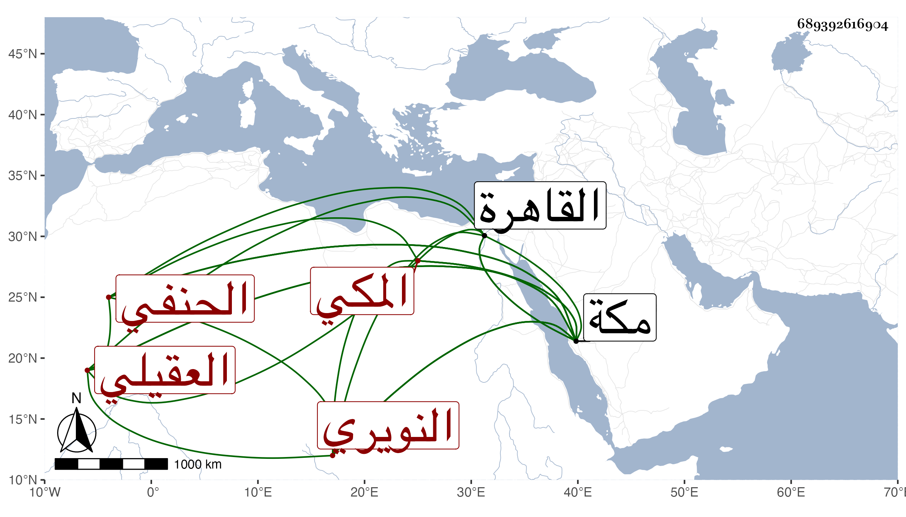

0902Sakhawi.DawLamic.ITO20230111-ara1.EIS1600.689392616904
Biography ID: 689392616904
773
عبد القادر بن محمد بن علي بن أحمد بن عبد العزيز محيي الدين بن الكمال أبي البركات العقيلي النويري المكي الحنفي والد أبي البركات محمد الآتي . ولد في ربيع الثاني سنة تسع وعشرين وثمانمائة بمكة ونشأ بها وسمع على أبي الفتح المراغي السنن الأربعة بأفوات وعلى التقي بن فهد أشياء ، وأجاز له في سنة ست وثلاثين فما بعدها جماعة وقدم القاهرة مرارا ولقيني بها وبمكة فسمع علي وتحرك للسعي في قضاء المالكية بمكة عقب ابن أبي اليمن مع كونه فيما أظن حنفيا ولم يستنكر ذلك في جنب خفته مع انه صار به ضحكة وهو مسبوق بهذا جاء رجل يسعى في قضاء الشافعية ظنا ببعض الأماكن فقال له الجمالي ناظر الخاص قد كتب به لفلان ولكن قضاء الحنفية شاغر فإن اخترت أعطيته فقال اني في تصرفكم لا أخالفكم في كل ما وجهتموني إليه أو كما قال وبالجملة فهو الآن أسن النويريين وفيهم من شاركه في الحمق والجهل وغيرهما .
